REVISÃO LOCAL · SEM PUBLICAÇÃOGabriel — nova base de anatomia e materiais
Morfologia adulta, pele com UVs de origem, olhos texturizados azul-cinza, cabelo curto, sobrancelhas e mãos. O moletom, jeans e tênis usam modelagem e texturas licenciadas, ajustadas ao rig existente. O escritório ganhou sombras de contato pré-calculadas no piso dos seis setores e mármore escuro na recepção.
Detalhes e testes · Relatório do projeto
Modelo real: antes e depois
Capturas do GLB efetivamente usado no site, em WebGL com luz de inspeção fixa. Não são renders offline nem concept art. A iluminação de inspeção permite comparar a geometria; as imagens do escritório abaixo mostram o ambiente real.
No escritório
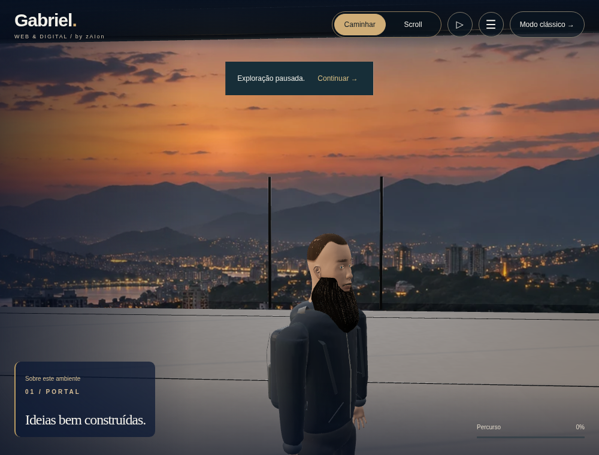
Antes.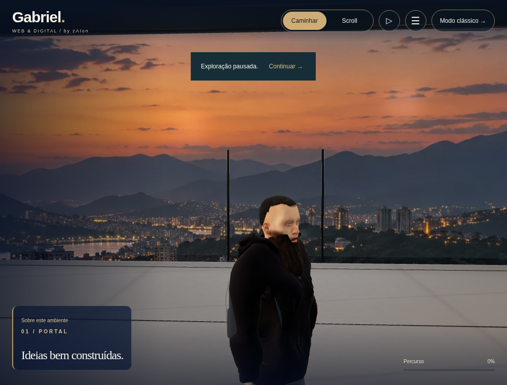
Depois: caminho PBR no mesmo procedimento de câmera, executado em SwiftShader. Pequenas diferenças de pose podem ocorrer durante a espera de carregamento.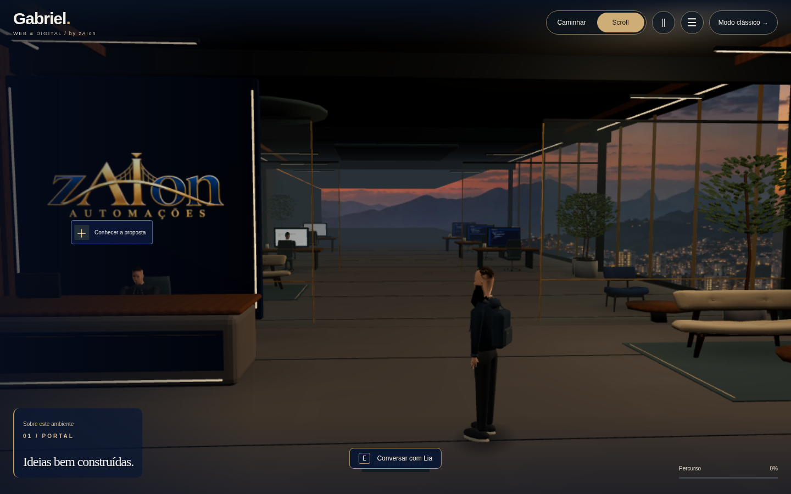
Entrada anterior, captura histórica da revisão precedente.Entrada da versão refinada no aplicativo.Ver os seis setores navegáveis — capturas dos testes em SwiftShader
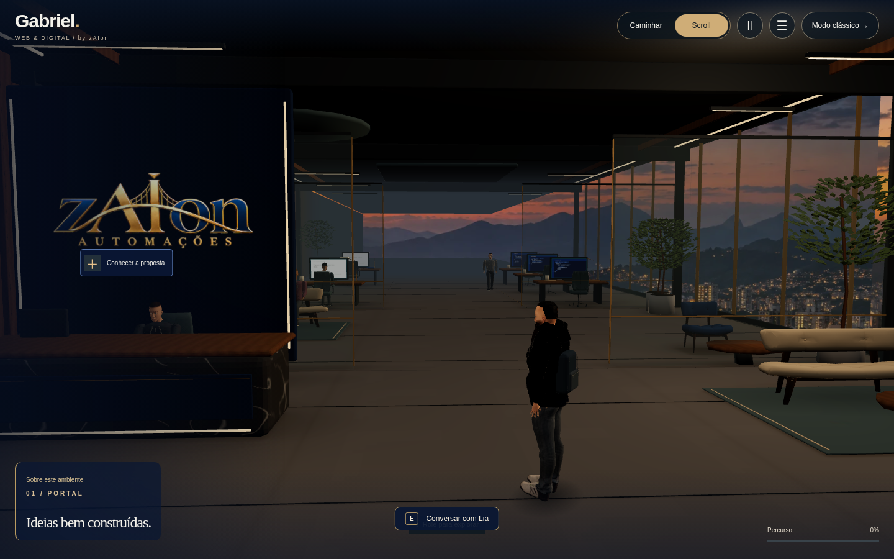
Recepção · captura real do aplicativo, caminho software.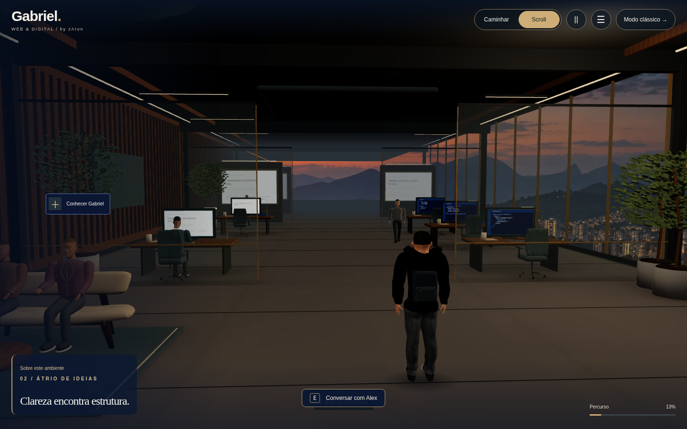
Lounge · captura real do aplicativo, caminho software.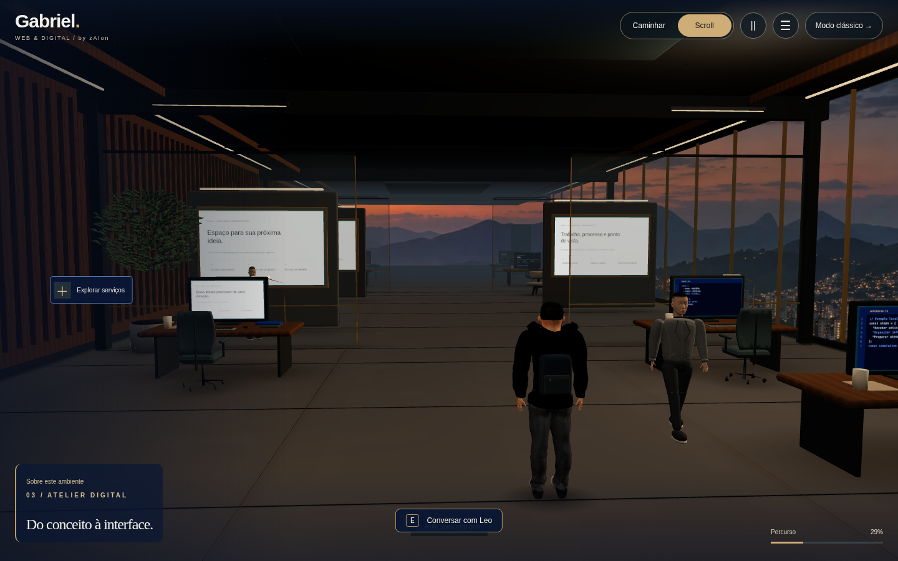
Estúdio de desenvolvimento · captura real do aplicativo, caminho software.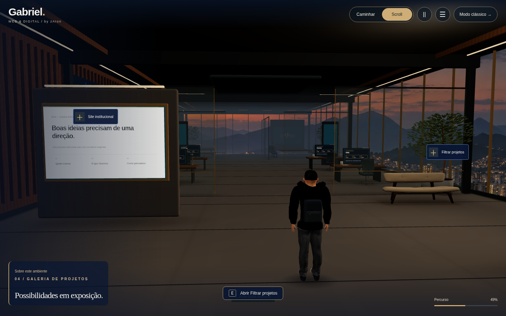
Galeria · captura real do aplicativo, caminho software.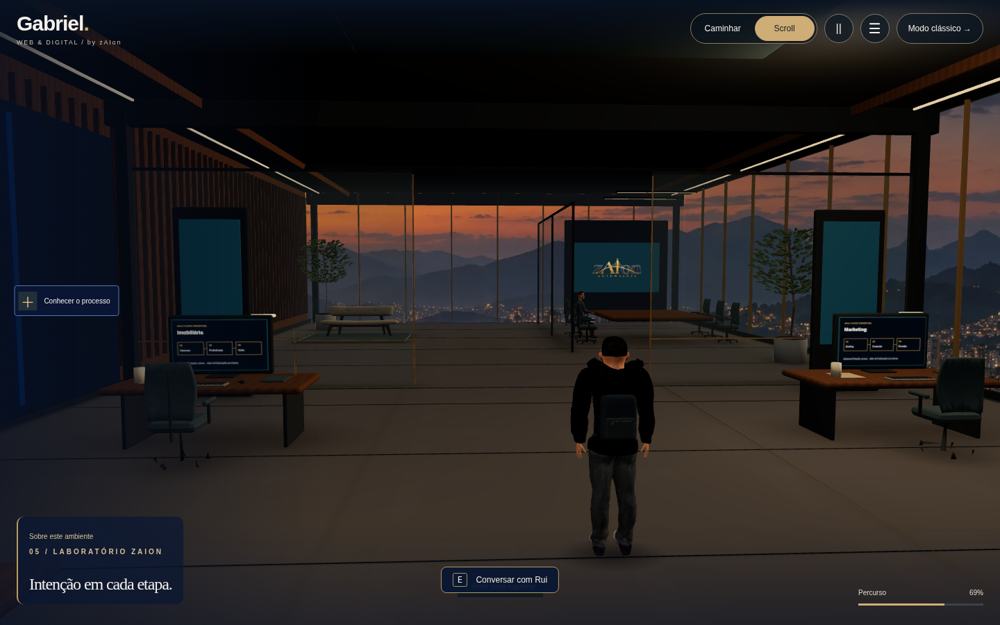
Laboratório de IA · captura real do aplicativo, caminho software.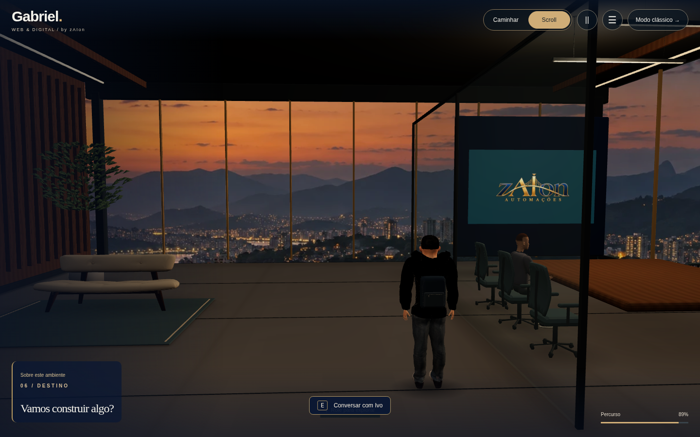
Reunião · captura real do aplicativo, caminho software.Geometria para o celular
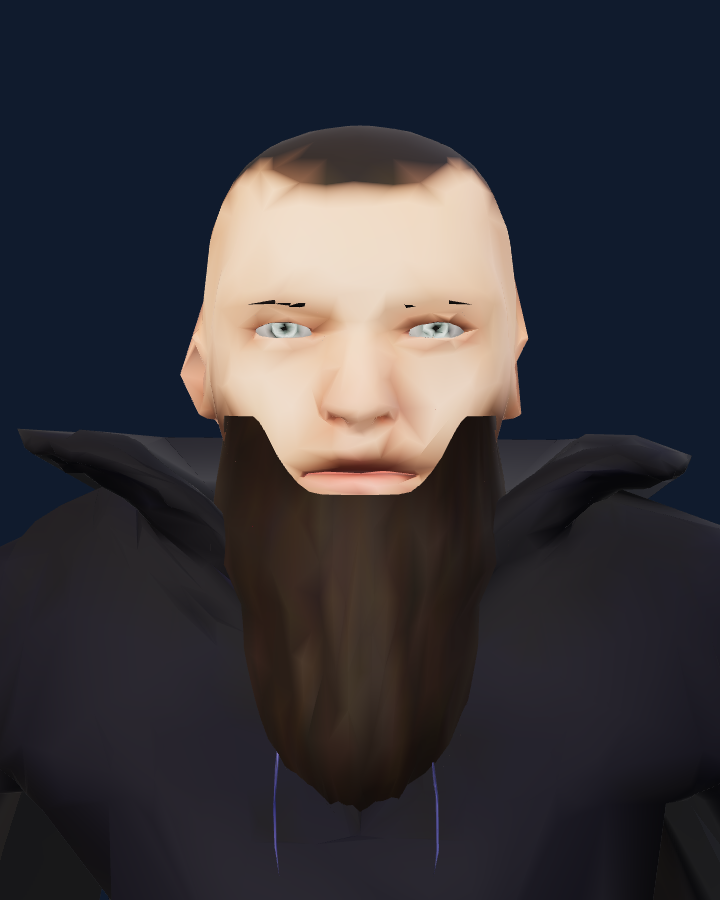
Versão leve, com texturas incorporadas às cores dos vértices e um único material. A ampliação expõe a perda de detalhe facial em relação ao PBR. O celular pode começar a caminhar enquanto a versão detalhada ainda baixa.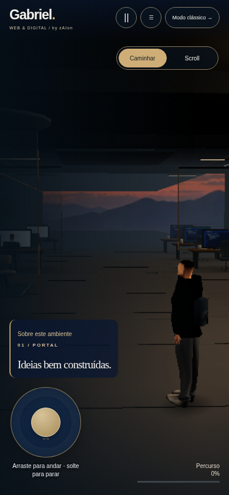
Analógico e movimento mais rápido preservados.A referência cinematográfica ainda não foi alcançada. A pele é de um modelo humano genérico licenciado; não é a foto de Gabriel. Permanecem diferenças de identidade facial, grooming, mobiliário e iluminação em relação às referências. Não há escaneamento nem animação facial por blendshapes. Os testes de navegador usam software e emulação móvel; não comprovam FPS em telefone ou GPU físicos.
Figurino: moletom Elvaerwyn — elvs_hooded_sweat_jacket1, CC BY, adaptado. Anatomia, pele e demais componentes nativos MakeHuman: CC0. Fontes e licenças completas.
ZIP: extraia e execute node INICIAR-REVISAO.mjs. O formulário permanece local, sem envio.